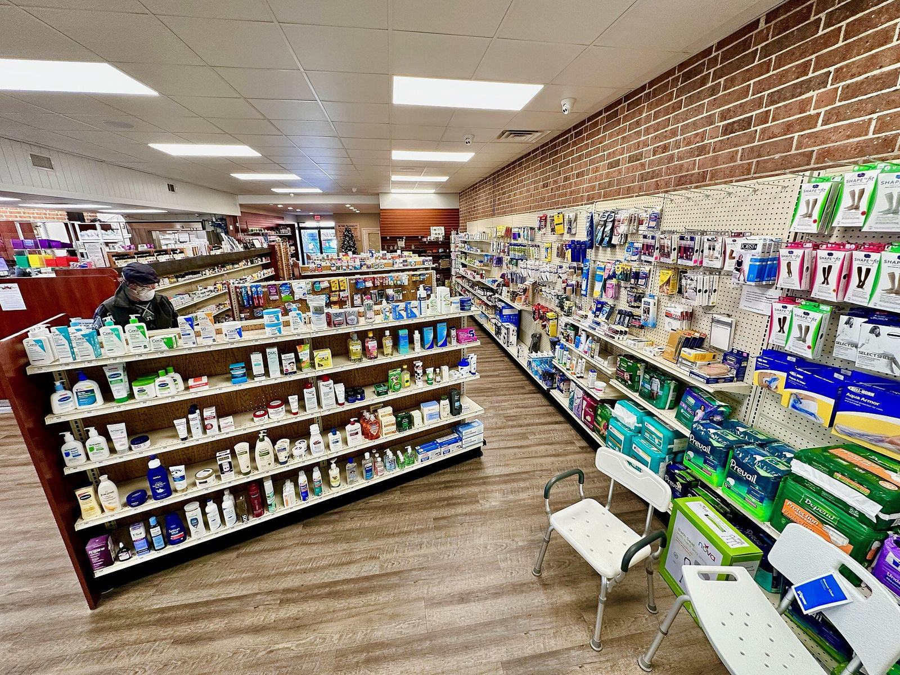
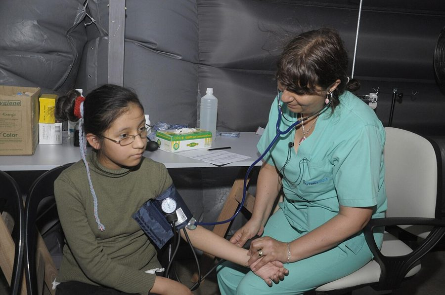

Créditos de imágenes
Las fotografías provienen de Wikimedia Commons y se usan según sus licencias libres. Los íconos, el logotipo y los avatares son ilustraciones propias del sitio.
| Imagen | Archivo original | Autor | Licencia |
|---|---|---|---|
 | The interior of a modern pharmacy shop in the United States.jpg | Harrison Keely | CC BY 4.0 |
 | Multicare Pharmacist.jpg | Woonjiawei | CC BY-SA 4.0 |
 | VariousPills.jpg | Ver página del archivo | CC BY-SA 3.0 |
 | Blood pressure measurement (1).jpg | Víctor Santa María from Buenos Aires, Argentina | CC BY 2.0 |
 | Pills and medicines 01.jpg | BuhaM | CC BY-SA 4.0 |
| 2023 Stetoskop.jpg | Jacek Halicki | CC BY-SA 4.0 | |
 | Thermometer (Fever) (50838273611).jpg | Alabama Extension | CC0 |
 | Erste Hilfe 003 2026 02 17.jpg | Friedrich Haag | CC BY-SA 4.0 |
 | B vitamin supplement tablets.jpg | Ragesoss | CC BY-SA 3.0 |
 | Hands hold a pack of pills while preparing for medication.jpg | Shixart1985 | CC BY 2.0 |


.jpg){kind=link}


_(50838273611).jpg){kind=link}